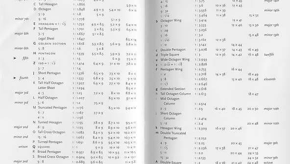
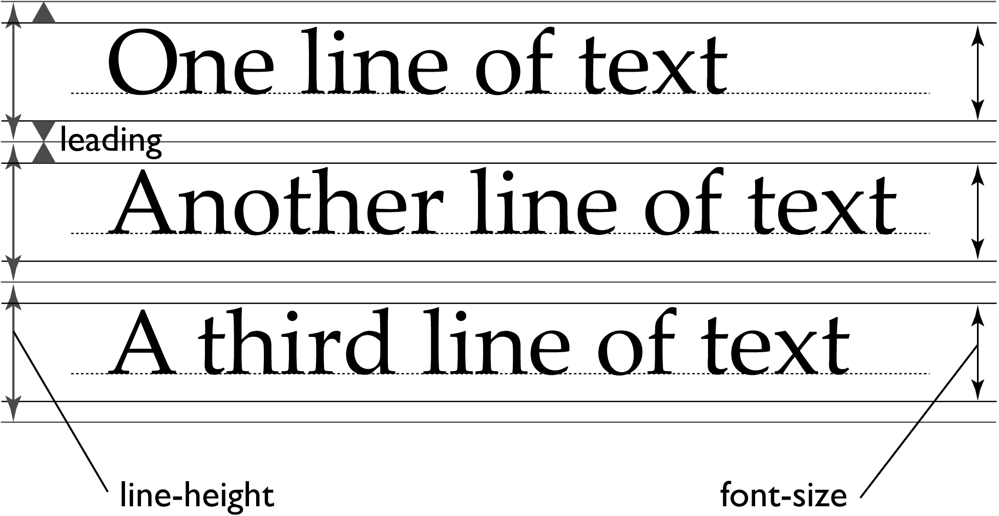

Введение
Все из вас держали в руках яркие глянцевые журналы, читали газеты и книги, а может даже некоторые задавались вопросами: "Почему они выглядят так красиво, и сохраняют при этом высокую читабельность текста?! Почему многие вебсайты не выглядят так же красиво?! Почему чаще всего после верстки макета, дизайн сайта теряет свою изящность?!". Конечно же первоначальный дизайн имеет первостепенное значение в восприятии сайта в целом, но не маловажную роль играет способ организации контента на нем. И тут к нам на помощь приходят основные типографические понятия, как вертикальный ритм (vertical rhythm) и модульное масштабирование (modular scale, пропорциональное масштабирование, модульные шкалы. Я не смог найти точного описания термина на русском языке и в разных источниках упоминаются разные термины).
Дело в том, что в типографике весь контент выравнивается по вертикальным линейкам, внутри документа сохраняется один и тот же ритм - это вертикальный ритм.
Как это выглядит на практике вы можете посмотреть кликнув на иконку в верхнем левом углу данного руководства. Преимущество такого подхода в том, что расстояние между элементами пропорциональное и надо меньше бегать глазами, чтобы перемещаться между элементами и найти их. За счет этого повышается читабельность текста и контента на странице.
Вторым не маловажным понятием является модульное масштабирование. Это когда есть базовый размер шрифта, а остальные размеры шрифта, которые мы можем использовать, получаются путем умножения или деления базового размера на число задающее коэффициент масштабирования.

Распространенные коэффициенты масштабирования вы можете посмотреть на скане ниже. Источник скана книга Bringhurst’s “The Elements of Typographics Style.” Брингхерст Р. “Oсновы стиля в типографике.”
Вам не нужно делать расчеты, чтобы сделать все это на вашем сайте. Все расчеты отступов и размеров для вас сделается автоматически плагин для PostCSS - PostCSS Hamster. Так же вам не стоит переживать, если заказчик попросит изменить размер шрифта, все автоматически сделает PostCSS Hamster, он пересчитает так же все отступы, чтобы все было по линейке. Вы можете прозрачно менять единицы измерения будь то em, rem, px. Все пересчитается автоматически. Все типовые расчеты для верстки веб страниц автоматизированы в PostCSS Hamster. Вам не нужно заниматься математикой и расчетами, на которую теряется много времени, вы можете сконцентрировать внимание на более важных вещах и например повысить адаптивность вашего веб сайта. На данный момент PostCSS Hamster является самым совершенным инструментом для поддержки типографики в среде веб разработки, притом на все расчеты уходит в среднем 35-58мс. Ни один существующий инструмент, кроме PostCSS Hamster не позволяет сделать это так быстро! Так же для работы вам не нужно обладать каким-то особыми навыками, автор постарался сделать синтаксис для работы с плагином простым и понятным даже новичкам. Чего например нет в конкурирующих продуктах где вам надо заморачиваться с кучей непонятных миксинов и параметров. Плюс по сравнению с конкурентами многие операции полностью автоматизированы и имеют большую гибкость!
Автор плагина провел не мало сотен часов за исследованием работы вертикального ритма в среде веб, а так же проблем связанных с поддержкой его в разных браузерах, включая такие старые браузеры, как internet explorer 6. Данные исследования послужили стимулом к созданию комплексного решения для поддержки вертикального ритма. Весь богатый опыт и рекомендации автора вы сможете получить в этом руководстве. Об установке и настройке PostCSS Hamster мы поговорим в следующей части.
- Сын, иди сюда! Отжимайся! 1,2,3,4,5,6...
- Все, не могу больше...
- Что?! Сдох?!!
- Да...
- Вот и хомяк твой тоже!!!
PS. Ваш хомяк для PostCSS никогда не сдохнет.
Установка
Установка NODE.JS
PostCSS Hamster работает в окружении NODE.JS и для его работы необходим установленный node.js на вашем компьютере или сервере. Если у вас еще не установлен NODE.JS, то вам необходимо пройти по ссылке https://nodejs.org/, скачать последнюю доступную версию и установить её.
Установка PostCSS Hamster
Для работы вам необходима консоль. Если у вас нет готового проекта node.js, то вам нужно перейти в рабочую директорию проекта и инициализировать его командой:
Дальше вам нужно установить необходимые расширения в существующий проект. Для этого в консоли вводим команду:
PostCSS необходимый для работы модуля должен установиться автоматически, но если это не произошло по какой-то причине, то вы всегда можете установить его командой:
Для запуска PostCSS Hamster вам необходимо создать файл с расширением .js, который будет обрабатывать ваши файлы. Содержимое скрипта находится ниже, и в нем необходимо заменить filename.css на имя вашего css файл, который будет обрабатываться, а outputfilename.css на имя выходного css файла. Это должны быть разные файлы!
var fs = require("fs"),
postcss = require("postcss"),
hamster = require("postcss-hamster");
fs.readFile("filename.css", "utf8", (err, css) => {
postcss([hamster]).process(css).then(result => {
fs.writeFileSync("outputfilename.css", result.css);
});
});Для запуска процесса обработки css файла надо запустить команду:
Если вы используете gulp для сборки проекта, то содержимое gulpfile.js будет примерно как ниже:
var gulp = require("gulp"),
sourcemaps = require("gulp-sourcemaps"),
postcssgulp = require("gulp-postcss"),
precss = require("precss"),
autoprefixer = require("autoprefixer");
hamster = require("postcss-hamster");
gulp.task("css", function () {
var processors = [precss({
"lookup": false
}), hamster, autoprefixer({
browsers: ["> 0.5%"]
})];
return gulp.src("./web/src/style.css")
.pipe(sourcemaps.init())
.pipe(postcssgulp(processors))
// .pipe(cssnano())
.pipe(sourcemaps.write("."))
.pipe(gulp.dest("./web/css"));
});
gulp.task("default", ["css"]);Настройка
Настройка PostCSS Hamster
Для настройки проекта вам необходимо внести блок @hamster {} в ваш CSS файл.
Как выглядят настройки вы можете посмотреть ниже. Не переживайте, если вы что-то не понимаете. Все параметры будут разъяснены ниже в документации.
@hamster {
/* Base settings */
font-size: 16px;
line-height: 1.5;
font-ratio: minor-third;
remove-comments: true;
/* Vertical Rythm settings */
unit: em;
px-fallback: true;
properties: extend;
ruler-style: switch ruler-debug;
ruler-color: rgba(19, 134, 191, .8);
ruler-icon-colors: #F0FAFF #ACFF0D;
ruler-icon-position: "position: absolute;top: 1.5em;left: 1.5em;";
ruler-background: png;
/*ruler-output: images/ruler.png;*/
ruler-pattern: 1 0 0 0;
ruler-scale: 4;
ruler-thickness: 1;
/* Custom contants */
font-weight: 400;
font-color: #44576a;
header-color: #1386BF;
background-color: #FAFDFF;
block-color: #F0FAFF;
hover-color: #1BBA13;
footer-color: #1B2633;
font-family: "Open Sans", "Segoe UI", "Helvetica Neue", Helvetica, Verdana, Tahoma, Arial, sans-serif;
}
/* Или локальные настройки */
@ihamster {
font-size: 18px;
line-height: 24px;
}
@hamster end;Список настроек
font-size - Базовый размер шрифта, от которого будут производиться расчеты. Значение задается в px.
line-height - Интерлиньяж (межстрочный интервал) и вертикальный ритм. Значение может быть в px или относительное значение без em, rem.
unit - Единицы измерения которые будут в выходном CSS файле. Возможные значения: px, em, rem, vw.
px-fallback - Если единицы измерения px, то в line-height вместо относительных значений будут значения в px. Например вместо line-height: 1.5; будет line-height: 24px;. Если единицы измерения em, то никаких изменений не происходит. Возможные значения true или false. true - опция включена, false - отключена.
rem-fallback - Если единицы измерения rem, то для поддержки старых браузеров значения будут дублироваться в px.
px-baseline - Принудительно включает значения размера шрифта в пикселях при установке базовой линии. По умолчанию значение false и значения размера шрифта будут в % - это дает лучшую поддержку, масштабируемость в старых браузерах. Опция необходима, если базовую линию собираетесь устанавливать несколько раз - например разрабатываете встраиваемый виджет для других сайтов. Возможные значения true или false.
font-ratio - Коэффициент масштабирования для расчета размеров шрифта(modular scale ratio). Можно задавать как числовое значение, например 1.25, так и буквенное название. Буквенные названия возможных коэффициентов представлены ниже в таблице. В PostCSS Hamster создаются алиасы(буквенные названия размеров шрифта), которые вы можете использовать у себя в CSS файлах. Вы можете создавать свои алиасы, а так же переопределять их значения. Это помогает быстро сменить нужный размер шрифта, не переписывая кучу значений в ваших CSS файлах, что экономит много времени и ваших нервов. Если значение 0, то алиасы не создаются, но вы можете их создать самостоятельно. Подробнее использование алиасов мы рассмотрим в практической части. Ниже даны коэффициенты масштабирования и предопределенный список алиасов.
| Name | Ratio | Value |
| golden | 1:1.618 | 1.618 |
| double-octave | 1:4 | 4 |
| major-twelfth | 1:3 | 3 |
| major-eleventh | 3:8 | 2.667 |
| major-tenth | 2:5 | 2.5 |
| octave | 1:2 | 2 |
| major-seventh | 8:15 | 1.875 |
| minor-seventh | 9:16 | 1.778 |
| major-sixth | 3:5 | 1.667 |
| minor-sixth | 5:8 | 1.6 |
| fifth | 2:3 | 1.5 |
| augmented-fourth | 1:√2 | 1.414 |
| fourth | 3:4 | 1.333 |
| major-third | 4:5 | 1.25 |
| minor-third | 5:6 | 1.2 |
| major-second | 8:9 | 1.125 |
| minor-second | 15:16 | 1.067 |
| Alias | Short Alias | Size |
| tiny | t | -2 |
| small | s | -1 |
| base | b | 0 |
| medium | m | 1 |
| large | l | 2 |
| xlarge | xl | 3 |
| xxlarge | xxl | 4 |
| xxxlarge | xxxl | 5 |
properties - Метод записи свойств @nowrap, @forcewrap, @ellipsis в css файлах. Возможные значения: inline и extend. Если значение inline, то свойства будут записываться внутри css стиля. Если extend, то создастся новый css стиль в котором будут перечислены все селекторы. Если в extend всего один наследник, то свойство записывается inline.
min-line-padding - Минимальный отступ в пикселях, для расчета количества линий, которое занимает размер шрифта. То-есть, если отступ до следующей линейки меньше данного значения, то добавляется еще одна линейка, чтобы разместить текст.
ruler - Генерирует в CSS линейку для отладки вертикального ритма. Возможные значения true или false.
ruler-style - Cтиль отладочной линейки. Формат: тип имякласса. Тип может быть: always - показывает линейку всегда, hover - показывать линейку при наведении на SVG иконку линейки, switch - использует CSS3 переключатель, который включает и выключает линейку. Имя класса - имя CSS класса в который запишется линейка. Для IE <= 8 необходимо использовать always.
ruler-icon-position - Расположение иконки линейки, например "position: absolute;top: 1.5em;left: 1.5em;". Обязательно в двойных кавычках!
ruler-icon-colors - Цвета иконки линейки, разделитель пробел. Первый цвет обычное состояние иконки, второй цвет когда линейка включена.
ruler-icon-size - Размер SVG иконки линейки в пикселях.
ruler-color - Цвет линий отладочной линейки. Поддерживаются rgb - rgba(19, 134, 191), rgba - rgba(19, 134, 191, .8), hex - #454545, websafe - #333 цвета. Рекомендуется использовать альфа канал и не прозрачность 80%, чтобы линейка сильно не бросалась в глаза и не утомляла.
ruler-thickness - Толщина линии линейки. Если линейка выдается через градиент, то это размер в %, если в PNG, то размер в пикселях.
ruler-background - Фон линейки. Возможные значения: gradient - линейка будет как linear-gradiеnt, поддерживается только новыми браузерами, png - линейка будет сгенерирована в виде PNG картинки.
ruler-output - Способ записи PNG линейки. По умолчанию значение base64 - линейка будет записана в CSS в виде base64 data uri. Остальные значения указывают на имя файла в который будет записана линейка, что необходимо при отладке в старых браузерах, не поддерживающих base64.
ruler-pattern - Узор PNG линейки. Разделитель пробел. 0 - прозрачный пиксель, 1 - цветной пиксель линии линейки.
ruler-scale - Коэффициент масштабирования PNG линейки, это число во сколько раз увеличится размер PNG линейки. На 4к мониторах линейка в масштабе 1 к 1 размывается из-за увеличения картинки в браузере, для решения этой проблемы используется картинка большего разрешения, которая легко может быть увеличена и сохранит четкость линий. Работает только в IE >= 9. Для старых браузеров рекомендуемое значение 1, для 4к мониторов - 4.
browser-font-size - Размер шрифта браузера в px. По умолчанию во всех браузерах стоит 16px. Опция необходима, если вы делаете расчеты для нестандартного браузера. В большинстве случаев рекомендуется оставить значение неизменным.
legacy-browsers - Поддержка старых браузеров при единицах измерения px. Если опция включена, то при установке базовой линии значение размера шрифта будет в % и добавиться селектор * html со значением межстрочного интервала, иначе значение в px. Не стоит путать с px-baseline, которая включает принудительно пиксели, при всех единицах измерения. Возможные значения true или false.
viewport - Задает размер видимой области для которой будет расчитаны значения calc c vw единицах измерения.(Динамические изменяемый размер шрифта в зависимости от размера экрана). Пример: 800px 1920px - указывает нижнюю и верхнюю границу ширины экрана. Для расчета должны быть устанолены: unit: vw. font-size - указывает минимальный размер шрифта при минимальном размере экрана. line-height - указывает минимальный размер высоты линии. to-font-size и to-line-height.
to-font-size - Задает максимальный размер шрифта для viewport.
to-line-height - Задает максимальный размер высоты линии для viewport.
use-global - Если опция включена(true), то высчитывается соотношение локального размера шрифта и глобального, ratio = localFontSize / globalFontSize. И все значения будут умножены на это соотношения, что позволяет использовать адаптивные размеры в rem и em без установки базовой линии.
@media screen and (min-width: 1920px){
@ihamster {
--font-size: 21px;
--line-height: 1.5;
--to-font-size: 42px;
--to-line-height: 1.6;
--viewport: 1920px 3840px;
--unit: vw;
}
@ruler;
@paste full;
@hamster end;
}remove-comments - Удаляет все CSS комментарии. Возможные значения true или false.
font-sizes - Добавляет и переопределяет алиасы для размеров шрифтов, разделитель ",". Синтаксис: алиас размервпикселях относительныйразмер. Относительный размер записывается без em и rem. Если какой-то из размеров отсутствует, то он сгенерируется автоматически относительно базового размера. Пример: font-sizes: fsize1 24px 1.5, fsize2 18px, fsize3 1.78;.
Так же в блоке @hamster вы можете задать константы, которые потом сможете использовать у себя в проекте. Для получения значения константы перед ее именем надо добавить @. Пример использования констант представлен ниже. @hamster reset; - сбрасывает все глобальные настройки в начальные значения.
html {
font-family: @font-family;
color: @font-color;
font-weight: @font-weight;
}Значения глобальных настроек по умолчанию
font-size: 16px;
line-height: 1.5;
unit: em;
px-fallback: true;
px-baseline: false;
font-ratio: 0;
properties: inline;
min-line-padding: 2px;
ruler: true;
ruler-style: always ruler-debug;
ruler-icon-position: "position: absolute;top: 1.5em;left: 1.5em;";
ruler-icon-colors: #cccccc #44576a;
ruler-icon-size: 24px;
ruler-color: rgba(19, 134, 191, .8);
ruler-thickness: 1;
ruler-background: gradient;
ruler-output: base64;
ruler-pattern: 1 0 0 0;
ruler-scale: 1;
browser-font-size: 16px;
legacy-browsers: true;
remove-comments: false;Практическое применение
Первым делом вам необходимо подготовить ваши html и css файлы к работе. В html файл надо добавить div для отображения линейки. DIV надо добавить в контейнер в котором мы будет отлаживать вертикальный ритм. PostCSS Hamster позволяет отлаживать вертикальный ритм в любом контейнере и линейка подстраивается под родительский контейнер!
Для ruler-style: switch html код будет таким:
<div>
<input type="checkbox" id="ruler-debug" />
<label for="ruler-debug"></label>
<div class="ruler-debug"></div>
</div>
В остальных случаях:
<div class="ruler-debug"></div>В html коде необходимо заменить ruler-debug на имя вашего класса линейки, который вы указали в настройках PostCSS Hamster.
Чтобы отладочная линейка правильно растягивалась по ширине экрана необходимо в селектор body добавить свойства position: relative; height: 100%;. Так же если вы хотите, чтобы линейка растягивалась не на весь экран, а только на контейнер содержащий ее, то в свойства контейнера надо добавить position: relative;.
Для включение CSS кода отладочной линейки надо добавить макрос @ruler;
После всех действий и настроек, CSS файл должен принять вид примерно как ниже:
@hamster {
/* Base settings */
font-size: 16px;
line-height: 1.5;
font-ratio: minor-third;
remove-comments: true;
/* Vertical Rythm settings */
unit: em;
px-fallback: true;
properties: extend;
ruler-style: switch ruler-debug;
ruler-color: rgba(19, 134, 191, .8);
ruler-icon-colors: #F0FAFF #ACFF0D;
ruler-icon-position: "top: 1.5em;left: 1.5em;";
ruler-background: png;
/*ruler-output: images/ruler.png;*/
ruler-pattern: 1 0 0 0;
ruler-scale: 4;
ruler-thickness: 1;
/* Custom contants */
font-weight: 400;
font-color: #44576a;
header-color: #1386BF;
background-color: #FAFDFF;
block-color: #F0FAFF;
hover-color: #1BBA13;
footer-color: #1B2633;
font-family: "Open Sans", "Segoe UI", "Helvetica Neue", Helvetica, Verdana, Tahoma, Arial, sans-serif;
}
@reset;
body {
font-family: @font-family;
color: @font-color;
font-weight: @font-weight;
position: relative;
height: 100%;
}
@ruler;Макросы и функции
@baseline; - Устанавливает базовую линию. Установка базовой линии - это установки точки отсчета для вертикального ритма, при котором записываются значения базового размера шрифта и межстрочного интервала. От базовых размеров происходит дальнейшее масштабирование относительных размеров элементов и их свойств. Синтаксис: @baseline; - установка базовой линии внутри стиля, работает с px и em. Так как, rem единицы всегда масштабируются относительно размера шрифта элемента html, то установить базовую линии в документе можно 1 раз и только в элементе html. @baseline html; - записывает базовую линию, создав стиль с селектором html, если unit: px и legacy-browsers: true, то еще запишется стиль с селектором * html {}, содержащий межстрочный интервал. Это необходимо для лучшей поддержки устаревших браузеров. Пример использования смотрите ниже.
body {
font-family: @font-family;
color: @font-color;
font-weight: @font-weight;
position: relative;
height: 100%;
@baseline;
}
/* Или */
@baseline html;@reset; - Добавляет Eric Meyer's “Reset CSS” 2.0.
@normalize; - Добавляет Normalize.css.
@sanitize; - Добавляет sanitize.css(форк normalize).
@box-sizing-reset; - Добавляет box-sizing reset.
@copy name1 {} - Копирует css код в фигурных скобках в переменную name1.(name1 - произвольное имя переменной)
@paste name1; - Вставляет css код из переменной name1.
@nowrap; - Добавляет white-space: nowrap; Пробелы не учитываются, переносы строк игнорируются, весь текст отображается одной строкой. Тег <br> переносит текст на новую строку.
@forcewrap; - Добавляет white-space: pre; white-space: pre-line; white-space: pre-wrap; word-wrap: break-word;. Принудительно вписывает длинный текст в контейнер, чтобы он не нарушал макет. Например есть длинная строка или слово, которые браузер не знает как правильно перенести на следующую строку. Он не может перенести ее и она будет вылезать из контейнера. Свойство принудительно включает перенос на следующую строку. Пример реализован в блоке .block-code.
@ellipsis; - Добавляет overflow: hidden; text-overflow: ellipsis;. Вписывает текст в прямоугольник контейнера и отображает только часть текста, которая вместилась в размер контейнера. Смотрите пример ниже.
@ellipsis true; - То же самое, что @ellipsis; и @nowrap; одновременно.
@hyphens; - Добавляет word-wrap: break-word; hyphens: auto;. Включает автоматический перенос слов в тексте, что делает текст более читаемым чем с text-align: left; или text-align: justify;
@break-word; - Добавляет word-break: break-word; word-break: break-all;. Разрешает жесткий перенос слов на следующую строку. Будьте внимательны, @break-word может ломать слова где угодно. @hyphens; делает перенос на следующую строку более мягко.
@hyphens true; - То же самое, что @break-word;, а затем @hyphens;.
fontsize или короткая запись fs - Записывает размер шрифта в unit(единицы измерения установленные в настройках) вместо буквенного алиаса. Синтаксис: fs alias[$unit][@x2, @d2 ]. @x2 - считает размер относительно увеличенного в двое базового шрифта. @d2 - считает размер относительно уменьшенного в двое базового шрифта. Например: fs xxxl, fs xxxl$px - принудительно запишет размер шрифта в пикселях, что удобно например использовать в сторонних функциях, fs 3$em@x2 - запишет 3 размер шрифта относительно увеличенного в двое базового размера. Так же можно указывать относительный размер, например: fs -2, fs 0 - базовый размер, fs 3. Примеры использования смотрите ниже.
font-size: fontsize base;
background: @text2svg "My best logo", "fontfile.ttf", fontSize fsize1$px, #fff;adjust-font-size - Переданный в параметрах размер шрифта переводит в единицы измерения, установленные в настройках. Установит рассчитанный размер в свойстве font-size, рассчитает для него количество занимаемых линий, и запишет свойство line-height. Формат: adjust-font-size: размер [количество занимаемых линий] [базовый размер шрифта]. Если вас не устраивает количество рассчитанных линий, то вы можете указать вручную количество занимаемых линий, а так же размер шрифта относительно, которого будут вестись расчеты. Примеры: adjust-font-size: 2em;, adjust-font-size: fontsize xxxl;, adjust-font-size: fontsize large 4;, adjust-font-size: fontsize small 2 18px;.
rhythm и !rhythm - Округляет значение переданное в параметрах, чтобы оно вмещало целое число линеек. rhythm округляет в меньшую сторону, а !rhythm в большую. Пример: rhythm(450px) - 432px, !rhythm(450px) - 456px. Формат: rhythm(значение[$выходные единицы измерения] [размер шрифта], ...). По умолчанию выходные единицы равны unit указанные в настройках. Пример: rhythm(450px$em 18px, 430px$em 18px).
spacing и lineheight (lheight) - переводят количество линий в unit. В параметрах можно передать не только целые числа, но так же дробные, и числа меньше 1. Отличие в работе у spacing и lineheight есть только при unit: px и px-fallback: false, spacing - всегда будет возвращать значение в пикселях, а lineheight может вернуть относительное значение, как например 1.5, без единиц измерения. spacing - подходит больше для установки отступов, lineheight - для установки значения свойства line-height. Формат: spacing([количество] [размер шрифта], ...), lineheight([количество] [размер шрифта], ...). Реальные примеры использования смотрите в блоке кода, расположенного чуть ниже.
base - умножает число переданное параметром на базовый размер шрифта и возвращает полученное значение.
leading - переводит количество leading в unit. leading условно равен базовый межстрочный интервал минус базовый размер шрифта. Используется для расчета отступов. Для наглядности смотрите картинку ниже. Формат: leading([количество] [размер шрифта], ...). Реальные примеры использования смотрите в блоке кода, расположенного чуть ниже.
Кнопки
Информационный блок
Блок кода
/* Variables. */
@hamster {
font-color: #44576a;
header-color: #1386BF;
background-color: #FAFDFF;
block-color: #F0FAFF;
hover-color: #1BBA13;
}
header {
margin-top: auto;
margin-bottom: auto;
height: rhythm(270px);
/*height: 264px;*/
background-image: url("../images/header.jpg");
background-position: center center;
}
/* Buttons source code. */
%button {
display: inline-block;
adjust-font-size: fontSize t;
/*Padding minus border size*/
padding: spacing(.25, 1.5);
margin-top: spacing(.25);
margin-bottom: spacing(.25);
border-radius: leading(.25);
font-weight: 500;
text-align: center;
text-decoration: none;
text-transform: uppercase;
box-shadow: 0 leading(.1, .25) rgba(0, 0, 0, 0.25);
transition: all .3s ease-in-out;
}
@define-mixin button $name, $color {
.button-$name {
@extend %button;
background-color: $color;
color: #fff;
/*border: leading(.1) solid $color;*/
&:hover {
background-color: @background-color;
color: $color;
transition: all .3s ease-in-out;
}
}
}
@mixin button blue, @header-color;
@mixin button gray, @font-color;
@mixin button green, @hover-color;
/* Blocks source code. */
$block-font-size: xlarge@d2;
%block {
adjust-font-size: fontSize $block-font-size;
margin-top: spacing(1);
margin-bottom: spacing(1);
padding: spacing(1);
text-align: left;
font-weight: 400;
clear: both;
border-radius: leading(.5);
overflow: hidden;
}
.block-info {
@extend %block;
@hyphens;
font-style: italic;
background: @block-color;
padding-left: spacing(4 fontSize $block-font-size);
background-image: url("data:image/svg+xml;charset=utf8,%3Csvg xmlns='http://www.w3.org/2000/svg' preserveAspectRatio='none slice' viewBox='0 0 8 8'%3E%3Cpath fill='%231386BF' d='M4.4 5.324h-.8v-2.46h.8zm0 1.42h-.8V5.89h.8zM3.76.63L.04 7.075c-.115.2.016.425.26.426h7.397c.242 0 .372-.226.258-.426C6.726 4.924 5.47 2.79 4.253.63c-.113-.174-.39-.174-.494 0z'/%3E%3C/svg%3E");
background-repeat: no-repeat;
background-size: spacing(2 fontSize $block-font-size, 2 fontSize $block-font-size);
background-position: spacing(1 fontSize $block-font-size) center;
}
.block-code {
@extend %block;
background: @code-color;
font-weight: 400;
color: @font-color;
background-repeat: no-repeat;
background-position: spacing(1 fontSize $block-font-size, 0.5 fontSize $block-font-size);
background-size: spacing(2 fontSize $block-font-size, 2 fontSize $block-font-size);*/
}Продвинутые функции
К сожалению, все проблемы связанные с поддержкой вертикального ритма в веб, мы не можем решить с помощью CSS. По этой причине, для решения остальных задач, в комплект PostCSS Hamster включена клиентская JS библиотека для браузеров - rhythm. Исходный код библиотеки вы можете найти в директории web/js/, а готовый к использованию файл rhythm.min.js лежит в директории build/web/. Реальный пример использования вы можете найти в файле app.es6. Так же код библиотеки был оптимизирован по скорости работы и не использует сторонних библиотек типа jquery. Изначально код был написан под jquery и поддерживал все браузеры IE6+, но потом было принято решение перейти на натив javascript, что дало значительный прирост в производительности и сократило размер подключаемых файлов в 10 раз. Библиотека работает исправно в браузерах IE9+. Код проекта был спроектирован так, что его можно адаптировать под более старые браузеры и для их поддержки присутствует код, но babel es6 транспайлер экспортирует файл для IE9+.
Вертикальный ритм для картинок, фреймов и блочных элементов

Вы наверное обратили внимание, что в данном руководстве есть картинки и фреймы не относящиеся к нему. Это было сделано специально, чтобы наглядно показать, как поддерживать для них вертикальный ритм. Для поддержки вертикального ритма этих элементов существует несколько способов:
- Можно изменить высоту элемента, и масштабировать его с сохранением пропорции, чтобы вписать его в существующий ритм.
- Добавить отступ сверху, снизу, или сразу сверху и снизу.
Все эти способы поддерживаются библиотекой rhythm входящей в состав PostCSS Hamster.
Настройка
Для настройки библиотеки rhythm необходимо передать настройки в конструктор класса. Глобальные настройки мы рассмотрим ниже.
property - Какое CSS свойство будет компенсировать вертикальный ритм. Возможные значения height-up, height-down, !height-up, !height-down, margin, padding, margin-bottom, margin-top, padding-bottom, padding-top. height-up - высота элемента будет увеличена до следующей линейки. height-down - высота элемента будет уменьшена до предыдущей линейки, подходит для картинок, так как уменьшение размера меньше сказывается на качестве картинки. !height-up, !height-down - тоже самое, что height-up и height-down, но будет изменена только высота и пропорции элемента изменятся. margin - сверху и снизу будет добавлен одинаковый margin. padding - сверху и снизу будет добавлен одинаковый padding. margin-top - будет добавлен margin сверху. margin-bottom - будет добавлен margin снизу. padding-top - будет добавлен padding сверху. padding-bottom - будет добавлен padding снизу.
base - Базовый размер шрифта в пикселях. Без суффикса px.
line - Высота межстрочного интервала, вертикальный ритм. Можно указать значение в пикселях и относительное значение без единиц измерения.
resize - Разрешает перерасчет вертикального ритма для элементов, если был изменен размер видимой области. Например при повороте экрана планшета. Возможные значения true и false.
resizeWidth - Разрешает изменять ширину элементов. Например мы меняем высоту и нам нужно сохранить пропорции сторон элемента. Так же если элемент по ширине больше ширины родительского контейнера, то он будет подогнан по ширине родительского контейнера, чтобы верстка не расползалась. Возможные значения true и false.
classPrefix - Префикс для классов компенсируемых элементов. Библиотека сохраняет оригинальные размеры элементов и чтобы их идентифицировать добавляется класс с префиксом и порядковым номером элемента.
brakePoints - Задает размеры шрифта и межстрочного интервала для разных размеров экрана. min - минимальный размер экрана, max - максимальный размер экрана. Пример:
let settings = {
"property": "height-down",
"brakePoints": [
{min: 0, max: 480, base: 14, line: 1.25},
{min: 480, max: 600, base: 15, line: 1.3},
{min: 600, max: 800, base: 16, line: 1.35},
{min: 800, max: 1280, base: 18, line: 1.4},
{min: 1280, max: 1600, base: 19, line: 1.5},
{min: 1600, max: 1920, base: 20, line: 1.55},
{min: 1920, max: 9999, base: 21, line: 1.6}
]
};dynamic: true - Автоматически расчитывает высоту линии.
dynamicSelector - Селектор элемента для которого будет расчитана высота линии.
let settings = {
"property": "height-down",
"dynamic": true,
"dynamicSelector": "p"
};Настройки по умолчанию представлены ниже. Вам не обязательно указывать все настройки и если какие-то настройки не указаны, то вместо них будут использоваться значение по умолчанию.
var settings = {
// Property for compensation. height-up, height-down, !height-up, !height-down, margin, padding, margin-bottom, margin-top, padding-bottom, padding-top
"property": "padding",
// Rhythm base font size, without "px".
"base": 16,
// Rhythm Line height. Relative or pixel size.
"line": 1.5,
// Resize if screen width changed.
"resize": true,
// Allow resize width of element
"resizeWidth": true,
// Uniq class prefix
"classPrefix": "rhythmHamster",
// Fix properties with relative values to round pixels
"properties": [
"line-height",
"padding-top",
"padding-bottom",
"margin-top",
"margin-bottom",
"padding-left",
"padding-right",
"margin-left",
"margin-right",
]
};
var irhythm = new Rhythm(settings);
Для компенсации вертикального ритма у экземпляра класса надо вызвать метод rhythm. Первым параметром в кавычках передаются селекторы через запятую, для которых будет компенсироваться вертикальный ритм. Второй и третий параметры не обязательны. Второй параметр указывает на компенсируемое свойство. Если параметр не передан, то используются глобальные настройки. Третий параметр разрешает или запрещает изменять ширину элемента. Например мы хотим увеличить высоту отдельного элемента, но не хотим менять ширину.
var settings = {
"property": "height-down",
"base": 16,
"line": 1.5,
"resize": true,
"resizeWidth": true
};
var irhythm = new Rhythm(settings);
// Document ready callback
irhythm.ready(function() {
var fix = function() {
// Fix Vertical Rhythm
irhythm.rhythm("#content img, #content iframe");
};
// Need to wait before browser calculate styles and can return getComputeredStyle.
window.setTimeout(fix, 1000);
});
// Или window load callback
irhythm.load(function() {
var fix = function() {
// Fix Vertical Rhythm
irhythm.rhythm("#content img, #content iframe");
};
// Need to wait before browser calculate styles and can return getComputeredStyle.
window.setTimeout(fix, 500);
});
Проблема округления относительных значений
![Internet Explorer]()
Многие современные браузеры поддерживают технологию subpixel rendering. Данная технология позволяет использовать не целые пиксели, а дробные части пикселя, что например может быть использовано для лучшего масштабирования на экранах с высоким разрешением. Все хорошо до тех пор пока мы используем целые значения в пикселях, но если мы использует единицы измерения rem и em, то браузер их переводит в виртуальные пиксели. И самая большая проблема заключается в том, что все браузеры округляют относительные значения по-разному. Если в Chrome, Firefox и на большинстве мобильных устройств погрешность округления в районе 0.005 пикселя, то браузеры фирмы Microsoft отличились, как всегда, больше всех. Особенно это заметно на значениях размера шрифта в em меньше 1. При значениях в rem менее заметно, что текст начинает плыть относительно сетки, так как все масштабируется относительно размера шрифта тега html и происходит меньше относительных вычислений, по сравнению с em. А вот с em все хуже, и к концу документа можно увидеть насколько сместился текст относительно сетки. На фото выше представлено фото округления значений в IE9 - EDGE из блока кода ниже. Самый маразм браузеров фирмы Microsoft заключается в том, что одни и те же значения в отступах и межстрочном интервале округляются и рендерятся по разному! Microsoft утверждают с каждой новой версией своего браузера, что переписывают движок, но мне верится в это с трудом, так как такое поведение наблюдается во всех последних браузерах Microsoft. В IE8 нет такой проблемы и там округление идет до целых пикселей. Но в IE6-7 есть проблема с округлением свойства border с em значениями.
.block {
font-size: 0.8333em;
line-height: 1.8001em;
margin-top: 1.8001em;
margin-bottom: 1.8001em;
padding-left: 1.8001em;
padding-right: 1.8001em;
}Для решения данной проблемы в rhythm включен метод fix, который округлит все значения указанных в настройках свойств до целых пикселей. Метод принимает первым параметром перечисленные через запятую селекторы, для которых необходимо пересчитать значения. Второй параметр может быть true или false, и обозначает это статические элементы или нет(по умолчанию true - статические). Статические элементы - это элементы, которые имеют общий стиль и не меняют своих размеров, например кнопки. Если статические элементы, то селектор разделяется на отдельные селекторы, в которых берутся только значения первого элемента, а дальше создается css стиль содержащий селектор. Если элементы не статические, то ищутся все элементы и для каждого, создается отдельный class. Статические элементы работают быстрее так, как создается меньше css стилей. Вы можете использовать оба похода, например true для статических элементов, и false для динамически изменяющихся.
Если вы переживаете за производительность, то код работает практически мгновенно. Смотрите картинку слева. Код был максимально оптимизирован и такой результат оптимизации многими программистам просто не достижим.